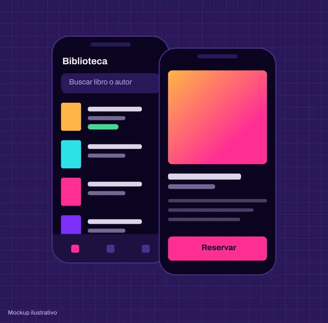

Rediseño de la app de la biblioteca
Encontrar y reservar un libro llevaba demasiados pasos. Entrevisté a estudiantes, rediseñé el flujo en Figma y lo validé con un test de usabilidad.
Resultado 38% → 91% de tareas completadas
Leer caso de estudio